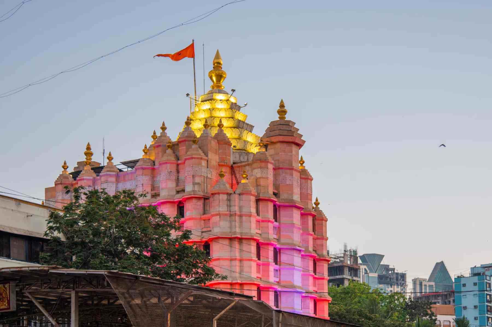

The **Shree Siddhivinayak Ganapati Temple** is a revered Hindu temple dedicated to Lord Ganesha. It is one of the most visited temples in Mumbai, attracting thousands of devotees every day, including celebrities and politicians. The temple was originally built in 1801 and has since been renovated and expanded.
The idol of Lord Ganesha inside the temple is made of a single black stone and is famous for having the trunk of the deity turned to the right. This feature is considered very auspicious and powerful. The temple is not just a place of worship but also a significant cultural landmark that reflects the deep faith of the people of Mumbai.

Image source:yatradham.com